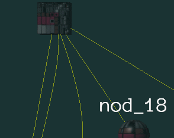

Jillinger
Hi
I would be happy to know that Urho supports vector graphics.
I searched around, but came up empty, which seems to indicate that the answer is no, but I decided to ask, just in case I might get a delighted surprise.

Hi
I would be happy to know that Urho supports vector graphics.
I searched around, but came up empty, which seems to indicate that the answer is no, but I decided to ask, just in case I might get a delighted surprise.

You can check out scorvi’s samples library (all cpp) here:
not sure if it will run with latest, worth a try though.
Thanks.
…would have been great if it worked too.
Only trying to get a build on Visual Studio only results in hundreds of erros.
Basically…
vs2013
error LNK2038: mismatch detected for ‘_ITERATOR_DEBUG_LEVEL’: value ‘0’ doesn’t match value ‘2’ in main.obj
vs2010
error LNK2038: mismatch detected for ‘_MSC_VER’: value ‘1800’ doesn’t match value ‘1600’ in main.obj
…and I can’t even get started with Codeblocks.
So as long as I have to build this, it’s a no-go.
Perhaps SVG support will be implemented in the Assets Importer sometime in the future.
I just thought of something.
Can’t I just use the header files in my project, from both the nanosvg-master, and nanovg-master files?
In fact, come to think of it, can I not do this for most anything that may be compatible with the Urho3D engine? Like bgfx just as I can use CEGUI?
Yes, you can add them to your project quite easily: Urho’s been designed with that use-case in mind. The fabrik library was recently integrated for IK support. An important question in my opinion, however, before you go about this, is what your intention behind wanting svg support is. For example, if you just want a scalable 2D GUI, there is a nuklear implementation for urho, and nuklear does support scaling iirc (though not vector graphics to my knowledge). You might also run into problems if you use nanosvg’s rendering instead of integrating it correctly with Urho, but without knowing your end-goal I don’t know if that’s relevant to you.
Cool. Thanks
Thanks
The fabrik library was recently integrated for IK support.
IK?
I had graphics in mind.
The reason I am thinking of SVG, is because they are scalable - maintaining their quality - so I was interested in using smaller textures, and since I am working on toon graphics, I think they are ideal for my project - cleaner than png imo.
I will look at nuklear, and see if it gives me what I am looking for.
Thanks for the advice.
IK? I had graphics in mind.
Sorry, I can see how that might have been confusing. It was intended as an example of a third-party integration recently contributed upstream.
The reason I am thinking of SVG, is because they are scalable - maintaining their quality - so I was interested in using smaller textures, and since I am working on toon graphics, I think they are ideal for my project - cleaner than png imo.
I would not use SVG for textures intended to be used with 3D models for various reasons (unless you’re doing a 2D game, in which case I still don’t know if the SVG approach makes a lot of sense, but I don’t know much about modern 2D game design), the primary one simply being that you would not have a good time.
That’s okay.
I would not use SVG for textures intended to be used with 3D models for various reasons…the primary one simply being that you would not have a good time.
I’m always learning, so I’d be glad if you elaborate. Thanks.
The short of it is that textures are a costly resource, so your goal should be to get the most out of your textures while keeping them as minimal as possible, both in size and quantity. Stay away from formats which are fat or lossy, and if you need alpha transparency, make sure the format supports it in the way you want.
Separate the process of creating, testing, and compressing your assets. Don’t try to reduce your work by flouting common practice, you will almost certainly end up increasing your work and or making the task impossible. A good starting place is using png, gif, or a propriety format developed specifically for whatever your use case is (assuming your use case demands it, though it seems unlikely).
If you’re still interested in the subject I advise reading some books/papers/blogs (in that order) on the subject of asset creation for viz-sim and games.
Most of the problems are because SVG is resolution independent. You have to rasterize to a target resolution which gets complicated if you need multiple different target resolutions (or you can just dodge the complications by spam reopening the SVG file).
You also have to deal with mips, but that’s more fact of life than an actual ‘problem.’ Since they’re raw files you have to either compress them at runtime or send them uncompressed (which is no different than using a PNG/JPG anyways).
The ideal place to use SVG is when you actually need those different output resolutions, such as:
The biggest downside to SVG is that only the larger libraries support the spec in full. Small ones like NanoSVG just implement a subset. Using a limited implementation of the spec really cuts down on the usefulness of it.
Well, you sure are right about the cost. I just tested it myself, and realized that the smallest svg is still larger than the png.
I realized though that I can still accomplish what I am aiming for, by using Inkscape as my Graphics editor and saving to png. Thanks guys, for saving me the trouble.


I just want to point out that MDL files may have other primitives besides triangle: line or point. I was able to use it to draw lines and point cloud. In case of lines I also was able to add bones and then control the shape of the line as an animated model.
Thanks for sharing.
Can I see a screenshot of your “lines and point cloud”?

This an image to illustrate a culling issue but you can see lines there.
Here you can find MDL files
It’s always good to know what’s available.
Thanks.